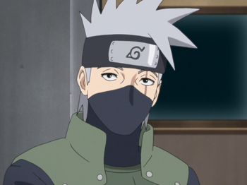

Kakashi Hatake (はたけカカシ, Hatake Kakashi) es un shinobi de Konohagakure. Fue un Jōnin, ex-ANBU y el líder del Equipo 7. Fue conocido mundialmente por su uso del Sharingan, lo que le valió el apodo de Kakashi el Ninja que Copia (コピー忍者のカカシ, Kopi Ninja no Kakashi) y Kakashi del Sharingan (写輪眼のカカシ, Sharingan no Kakashi). En su adolescencia fue alumno de Minato Namikaze y compañero de equipo de Obito Uchiha y Rin Nohara. También fue el capitán de la Tercera División de la Gran Alianza Shinobi. Después de los acontecimientos de la Cuarta Guerra Mundial Shinobi, Kakashi se convirtió en el Sexto Hokage (六代目火影, Rokudaime Hokage; que significa "Sexta Sombra del Fuego") de Konoha